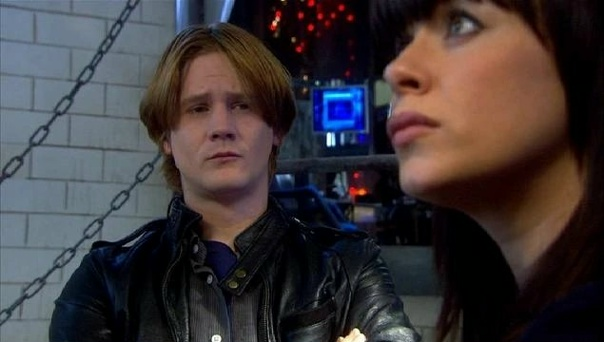

Весь 2-й сезон (13 серий)
Весь 2-й сезон (13 серий) |
Adam
Дата выхода: 13 февраля 2008
Формат: 50-минутный эпизод
| Варианты озвучек: | * Разные: смотрите по инструкции |
|---|---|
| Скачивание и просмотр: |
Инопланетное существо со способностью создавать ложные воспоминания вторгся в ряды команды Торчвуда. Прошлое о потерянной семье настигает капитана Джека, в то время как Гвен полностью забывает своего жениха Риса, и лишь любовь Джека к Йанто может спасти положение. Однако придётся хорошо расплатиться.
